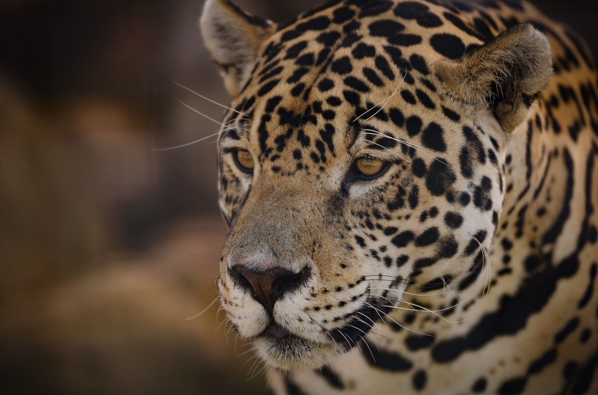
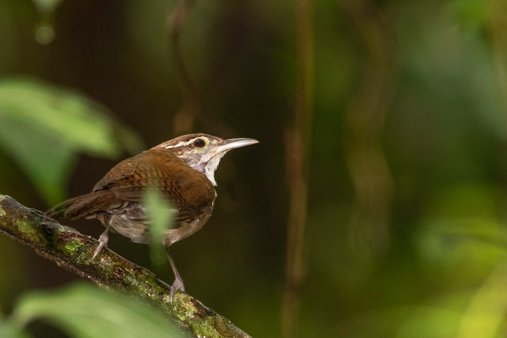
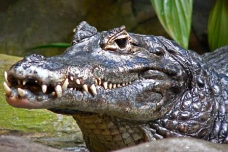

Rana venenosa de Lehmann
Uno de los objetivos es salvar a la rana venenosa de Lehmann (Oophaga lehmanni) con un proyecto de
conservación y reproducción bajo cuidados humanos.
Ver
más...

Delfín Rosado
El delfín gris y el delfín rosado son las dos especies que habitan en la
Amazonía y Orinoquía. Enfrentan amenazas como la pesca incidental, cacería, pérdida de hábitat,
contaminación, cambio climático y perturbaciones acústicas.
Ver
más...

Jaguar (Pantera Onca)
Su población en el mundo se ha reducido en un 45% y en países como Estados Unidos, El Salvador y
Uruguay está declarado como extinto. En Colombia, las poblaciones más grandes de jaguares se
encuentran en el Amazonas, la Orinoquia, Chocó y el Caribe.
Ver
más...

Pajaro Cucarachero
su desaparición responde, principalmente, a la pérdida y fragmentación de estos ecosistemas del
Caribe colombiano por la extracción de madera y actividades agrícolas y ganaderas.
Foto: Mauricio Ossa
Ver más...

Caimán negrol
El Instituto Humboldt alertó que en el país hay tres especies de caimanes que se encuentran en grave
riesgo de desaparición, sobre todo, debido a la caza indiscriminada debido al tráfico de pieles que
se presenta en algunas zonas donde habitan.
Ver más...